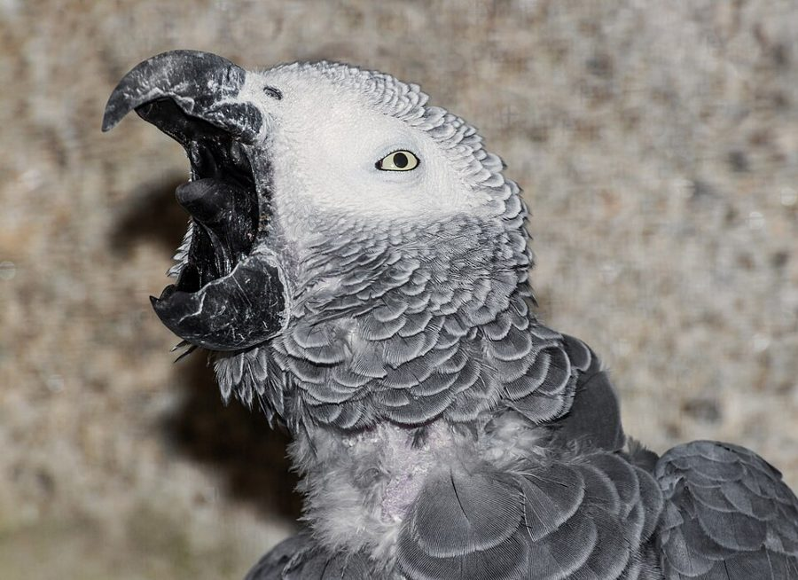
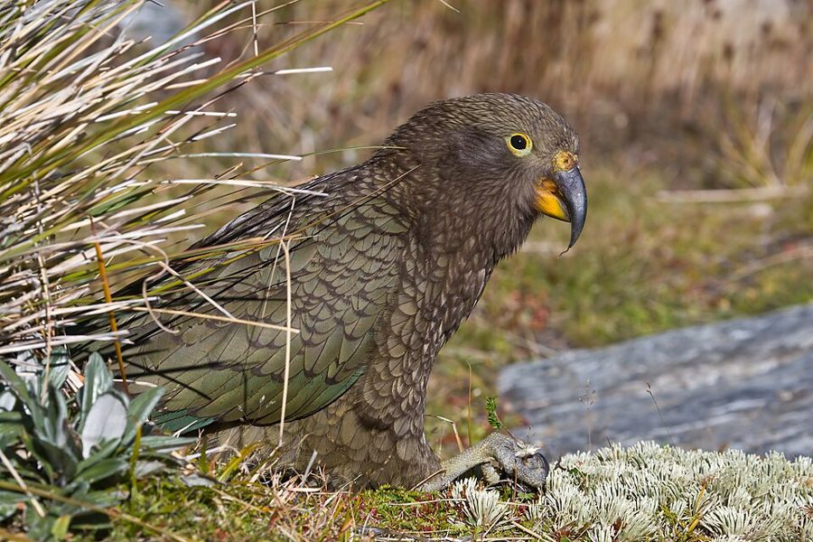
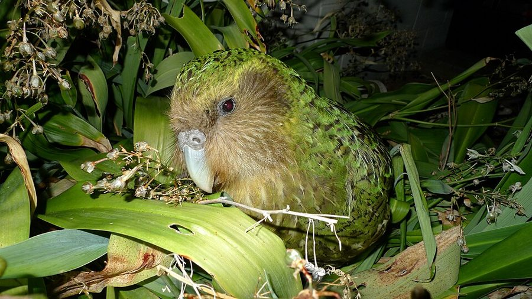

> README — what makes a parrot a parrot

- The order: Psittaciformes, roughly 400 species living mostly in the tropics and the southern hemisphere.
- The grip: zygodactyl feet (two toes forward, two back) let parrots hold food up to the beak like a hand.
- The beak: a strong curved upper bill plus a muscular tongue makes seeds and nuts easy work.
- The voice: many species copy sounds, including human speech, because they learn calls from their flock.
- The uptime: large macaws and cockatoos often live 50 years or more, so people sometimes leave parrots in their wills.

> NODE: African grey
The famous talker. Alex, an African grey studied for about 30 years by scientist Irene Pepperberg, could name objects, colours and shapes and answer simple questions about them. Greys come from the rainforests of central Africa and are now endangered in the wild because of trapping and habitat loss.

> NODE: Kea
The only alpine parrot in the world, from the mountains of New Zealand’s South Island. Kea are curious problem-solvers known for taking apart car wipers, backpacks and anything else left unattended. Under the olive-green wings is a flash of bright orange.

> NODE: Kākāpō
A heavy, nocturnal parrot from New Zealand that can’t fly at all. It nearly went extinct; every surviving bird is named and tracked by a recovery programme. Sirocco became a celebrity after a famous on-camera moment with a zoologist, and later a conservation “spokesbird”.
> MAN PAGE — before you adopt
- Long contract: plan for decades, not years.
- Flock animal: parrots need daily company and get lonely and bored without it.
- Chewing is a feature: give them safe toys or they will pick your furniture instead.
- Adopt, don’t buy wild-caught: rescues are full of parrots that outlived their first owners.
,_, (O,O) squawk.exe ( ) uptime: 60y --"-"-- status: talking